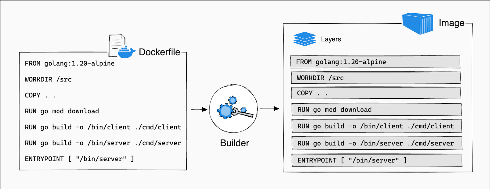
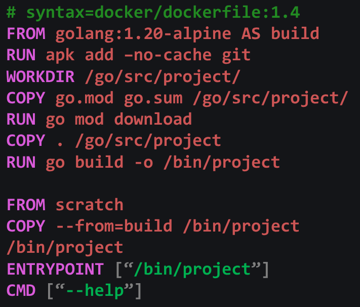

Rule: Ask questions!
- If something isn’t clear. Interrupt me.
- If you have any question. Interrupt me.
- No really… interrupt me, otherwise I will just keep talking.

Where we’re going, we won’t need overlay.
Leigh Capili
Tom Bereknyei


A declarative framework for package management, builds and deployments
docker build

go build, npm build,
nix build, …

/usr/local/share/usr/bin/lib/
Cut out Python from the rest of the graph: